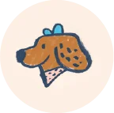
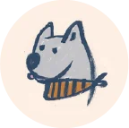
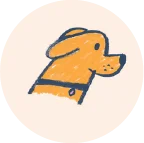
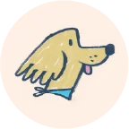
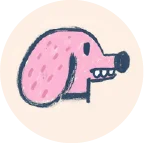

Acción directa
Intervenimos directamente en la asistencia a animales abandonados o en situaciones críticas, brindando atención médica, alimento y cuidado.
Somos Proyecto 4 Patas una ONG dedicada al rescate, cuidado, rehabilitación y adopción responsable de perros y gatos en situación de abandono o maltrato.
Nacimos en el año 2015 en Buenos Aires, cuando un grupo de personas decidimos ayudar a un perro que se encontraba abandonado y en malas condiciones. A partir de esa experiencia, entendimos que muchos animales necesitaban una red de personas comprometidas con su bienestar.
Desde entonces, trabajamos junto con veterinarios, hogares de tránsito, adoptantes y voluntarios para brindarles a los animales una segunda oportunidad. Nuestro objetivo es que cada perro y gato rescatado pueda recuperarse y encontrar una familia responsable.
Proyecto 4 Patas funciona gracias al trabajo conjunto de voluntarios, hogares de tránsito, adoptantes, donantes y profesionales veterinarios.
Intervenimos directamente en la asistencia a animales abandonados o en situaciones críticas, brindando atención médica, alimento y cuidado.
Organizamos campañas de castración y concientización para prevenir el abandono y mejorar el bienestar animal.
Compartimos información sobre adopción responsable, cuidado animal, castración, vacunación y respeto hacia los animales.
Promovemos el cumplimiento de las leyes de protección animal y acompañamos denuncias en casos de maltrato.
Trabajamos junto a voluntarios, organizaciones y personas que colaboran con donaciones, tránsito y difusión.
 |
 |
 |
 |
 |
|---|---|---|---|---|
| Acción directa |
Acción preventiva |
Acciones educativas |
Acciones judiciale y legislativas |
Acciones solidarias |
| Intervenimos directamente en la asistencia a animales abandonados en situaciones críticas, proporcionándoles atención médica y fomentando su adopción posterior por parte de hogares responsables. | Organizamos campañas de castración gratuitas y/o de bajo costo en áreas de alta vulnerabilidad donde la presencia estatal es ineficiente y los perros y gatos se reproducen sin control. | Impartimos charlas, talleres, campañas de bien público y eventos con el propósito de concientizar sobre temas cruciales como la sobrepoblación animal, la importancia de la castración, la venta de animales y la adopción, la crueldad y el maltrato, el cuidado responsable, la ética animal, entre otros. | Exigimos el cumplimiento de las leyes existentes y respaldamos la presentación de proyectos de ley que beneficien a los animales, contribuyendo así a su protección y bienestar. | Establecemos colaboraciones estrechas con entidades de bien público, organizaciones y activistas que comparten nuestros objetivos, fortaleciendo la red de apoyo y compromiso hacia la causa animal. |